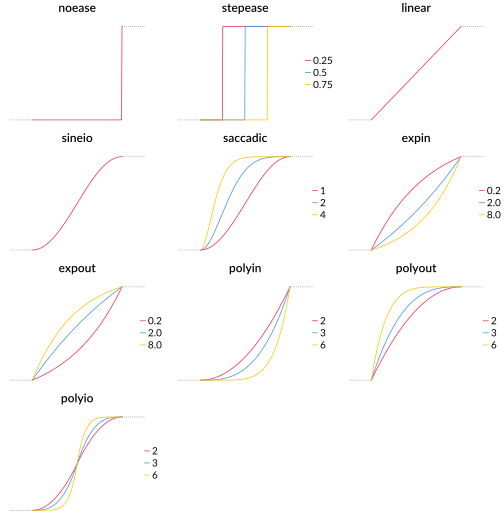
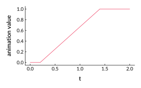

Animations.jl
Animations.jl offers an easy way to set up simple animations where multiple keyframes are interpolated between in sequence. You can choose different easing functions or create your own. Keyframe values can be anything that can be linearly interpolated, you can also add your own methods for special types. An easing can have repetitions and delays, so that looping animations are simpler to create.
Animations
An Animation consists of Keyframes that each have a time stamp and a value. That value must be of the same type for all keyframes. For each pair of consecutive keyframes the animation also contains an Easing. This easing determines how values between two keyframes are interpolated over time. You generally don't have to construct keyframes yourself, there are a few constructor functions for Animation that are easier to use.
Here we create an animation that starts at the value 1 at time t = 0, then goes to to 2 at t = 1, and then 3 at t = 2. Between the first two keyframes we use a sine in / out easing, and between the next two a linear easing.
using PyPlot # hide
using Animations
anim = Animation(
0, 1.0, # t = 0, value = 1
sineio(),
1, 2, # t = 1, value = 2
linear(),
2, 3 # t = 2, value = 3
)
nothing # hideBecause we are just interpolating numbers in most examples here, we can plot them to visualize what the result of the animation is. To get the value of the animation at some time t we use the at() function.
ts = 0:0.01:2
ys = at.(anim, ts)
figure(figsize=(4, 2.5)) # hide
plot(ts, ys)
xlabel("t") # hide
ylabel("animation value") # hide
tight_layout() # hide
savefig("example_1.svg"); nothing # hideAnother way to write this is with vectors for timestamps and values. (Note that the first version is often easier to understand if you have many timestamps or if the values are longer, so timestamps and values are not visually aligned anymore). Here's an example of the vector syntax:
anim = Animation(
[0, 2, 3],
[0.0, 10.0, 20.0],
[sineio(), linear()],
)The keyframe values are specified as Float64 literals here and not Ints. That is because an Animation{T} always has to return values of type T and if T is Int you get InexactErrors in most cases after interpolation.
Instead of using at(), you can also get an animation's value for a specific t by calling it:
value = anim(t)If you use the interleaved syntax from above, you can leave out easings and they will be filled in with the default linear easing, which you can change using the defaulteasing keyword like so:
anim = Animation(
0, 1.0, # t = 0, value = 1
# no easing specified
1, 2.0, # t = 1, value = 2
# no easing specified
2, 3.0; # t = 2, value = 3
defaulteasing = sineio()
)If you use the vector syntax, you can simply specify a single easing instead of a vector, and it will be used for all keyframes. This is the equivalent to the previous example in vector syntax:
anim = Animation(
[0, 1, 2],
[1.0, 2.0, 3.0],
sineio() # note the single easing instead of a vector
)Easings
Easings determine how keyframes are interpolated between. These are (usually) functions that go from 0 to 1 over the range from 0 to 1, and their curvature decides velocity and acceleration of the animation. There are multiple predefined easing functions, some of which take parameters:

Repeats, Yoyo, Pre- and Postwait
Often you have two values that you interpolate between, but you want a more interesting animation than just going from a to b. Each easing function takes four keyword arguments that you can use for that, n, yoyo, prewait and postwait.
Repeats
Use the n keyword for repeats:
anim = Animation(
0, 0.0,
linear(n=3),
2, 1.0
)
ts = 0:0.01:2
ys = at.(anim, ts)
plot(ts, ys)Yoyo
As you can see, repeats lead to breaks in the animation, which might be what you want, but often you want a back-and-forth motion between two values, like a yoyo. That's what the yoyo parameter is for:
anim = Animation(
0, 0.0,
linear(n=3, yoyo=true),
2, 1.0
)
ts = 0:0.01:2
ys = at.(anim, ts)
plot(ts, ys)Only if n is an odd number does an animation with yoyo end with the second keyframe value, otherwise it ends with the first. This is something to keep in mind. If you have a keyframe following after, you might want an odd number of repeats so there is no break, if you just want a looping animation without a break, you might want to choose an even number. Also, if you retrieve values from an animation for timestamps outside of its keyframes, all values before the first keyframe are the same as the first computed value, and all values after are the same as the last computed value, not the actual keyframe values. This is only relevant if you use even-numbered yoyo's though, which often happens with looping animations. See the difference here:
anim_even = Animation(
0, 0.0,
linear(n=4, yoyo=true),
2, 1.0
)
anim_odd = Animation(
0, 0.0,
linear(n=3, yoyo=true),
2, 1.0
)
ts = -0.5:0.01:3
ys_even = at.(anim_even, ts)
ys_odd = at.(anim_odd, ts)
plot(ts, ys_even, label="even")
plot(ts, ys_odd, label="odd")Prewait and Postwait
Especially with yoyo animations, it often looks better if there is a slight moment of rest at the endpoints. You can easily achieve this with the prewait and postwait keywords. Their values are given in fractions of keyframe to keyframe duration, so prewait = 0.5 means the actual animation happens only in the second half. Here's an example:
anim = Animation(
0, 0.0,
linear(prewait=0.1, postwait=0.3),
2, 1.0
)
ts = 0:0.01:2
ys = at.(anim, ts)
plot(ts, ys)
If you use repeat or yoyo, each prewait and postwait period is just divided by the number of repeats:
anim = Animation(
0, 0.0,
linear(prewait=0.1, postwait=0.3, n=2, yoyo=true),
2, 1.0
)
ts = 0:0.01:2
ys = at.(anim, ts)
plot(ts, ys)Colors and special types
Using Colors is enabled already, but you can add other custom types that can be interpolated:
coloranim = Animation(
0, RGB(1, 0, 0),
sineio(),
1, RGB(0, 1, 0),
polyin(2),
2, RGB(0, 0, 1)
)For your own type T, if the generic (value2 - value1) * fraction + value1 doesn't work, just add a method linear_interpolate(fraction::Real, value1::T, value2::T) where T.
Arrays
Interpolation also works easily with arrays of values:
Animation(
0, rand(25),
sineio(n=2, yoyo=true, prewait=0.3),
2, rand(25)
)Relative timestamps
If you're tweaking the length of parts of an animation, you can use rel() for a timestamp relative to the previous one, like so:
Animation(
0, 1.0,
rel(1), 2.0,
rel(3), 3.0,
rel(0.2), 0.0,
rel(0.4), 1.0
)This way it's easier to adjust one duration without having to change all following ones.
FiniteLengthAnimation
Animations, Loops and Sequences are subtypes of FiniteLengthAnimation, which are required as the content for (finite) Loops and Sequences
Loops
You can turn a FiniteLengthAnimation into a loop like this:
anim = Animation(
0, 1.0,
sineio(),
0.5, 2.0,
polyin(3),
1, 1.0
)
start = 0
gap = 1
repetitions = 3
loop = Loop(anim, start, gap, repetitions)
ts = 0:0.01:6
ys = at.(loop, ts)
plot(ts, ys)Sequences
You can string together FiniteLengthAnimations into sequences like this:
anim1 = Animation(
0, 1.0,
sineio(),
0.5, 2.0,
polyin(3),
1, 1.0
)
anim2 = Animation(
0, 1.0,
saccadic(2),
0.5, 3.0,
expout(3),
1, 1.0
)
loop = Loop(anim2, 0, 0.5, 3)
start = 0
gap = 1
sequence = Sequence([anim1, loop], start, gap)
ts = 0:0.01:6
ys = at.(sequence, ts)
plot(ts, ys)
Async animations
If you want to run animations live, e.g. in an interactive plotting context, you can use animate_async. You supply a variable number of animations, loops and sequences and a function. This function is called with the current time of the animation (starting at zero) and the evaluated result of each animation at that time.
animate_async(an_animation, a_sequence, a_loop) do t, v_anim, v_seq, v_loop
# do something with the animation values here, like updating a plot
end